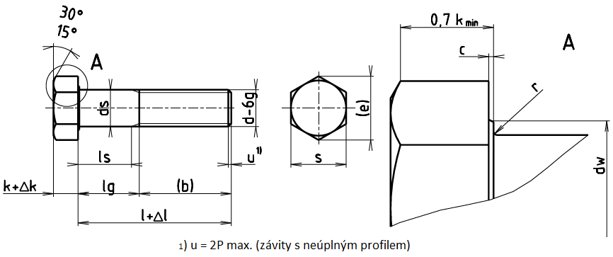

| d×P1) | M56×4 | (M60×4) | M64×4 |
|---|---|---|---|
| b3 | – | – | – |
| b4 | 137 | 145 | 153 |
| cmax. | 1 | 1 | 1 |
| cmin. | 0,3 | 0,3 | 0,3 |
| ds min. | 55,26 | 59,26 | 63,26 |
| da max. | 63 | 67 | 71 |
| dw min. | 78,68 | 63,41 | 88,16 |
| emin. | 93,56 | 99,21 | 104,86 |
| smax. | 85 | 90 | 95 |
| smin. | 82,8 | 87,8 | 92,8 |
| k | 35 | 38 | 40 |
| Δk | 0,5 | 0,5 | 0,5 |
| rmin. | 2 | 2 | 2 |
| l | Δl | ls lg5) 6) | M56×4 | (M60×4) | M64×4 |
|---|---|---|---|---|---|
| 220 | 2,3 | ls min. lg max. |
55,5 83 |
Pro délky ležící nad lomaenou čarou se používají šrouby podle ISO 8676 | |
| 240 | 2,3 | ls min. lg max. |
75,5 103 |
67,5 95 |
|
| 260 | 2,6 | ls min. lg max. |
95,5 123 |
87,5 115 |
77 107 |
| 280 | 2,6 | ls min. lg max. |
115,5 143 |
107,5 135 |
97 127 |
| 300 | 2,6 | ls min. lg max. |
135,5 163 |
127,5 155 |
117 147 |
| 320 | 2,85 | ls min. lg max. |
155,5 183 |
147,5 175 |
137 167 |
| 340 | 2,85 | ls min. lg max. |
175,5 203 |
167,5 195 |
157 187 |
| 360 | 2,85 | ls min. lg max. |
195,5 223 |
187,5 215 |
177 207 |
| 380 | 2,85 | ls min. lg max. |
215,5 243 |
207,5 235 |
197 227 |
| 400 | 2,85 | ls min. lg max. |
235,5 263 |
227,5 255 |
217 247 |
| 420 | 3,15 | ls min. lg max. |
255,5 283 |
247,5 275 |
237 267 |
| 440 | 3,15 | ls min. lg max. |
275,5 303 |
267,5 295 |
257 287 |
| 460 | 3,15 | ls min. lg max. |
295,5 323 |
287,5 315 |
277 307 |
| 480 | 3,15 | ls min. lg max. |
315,5 343 |
307,5 335 |
297 327 |
| 500 | 3,15 | ls min. lg max. |
335,5 363 |
327,5 355 |
317 347 |